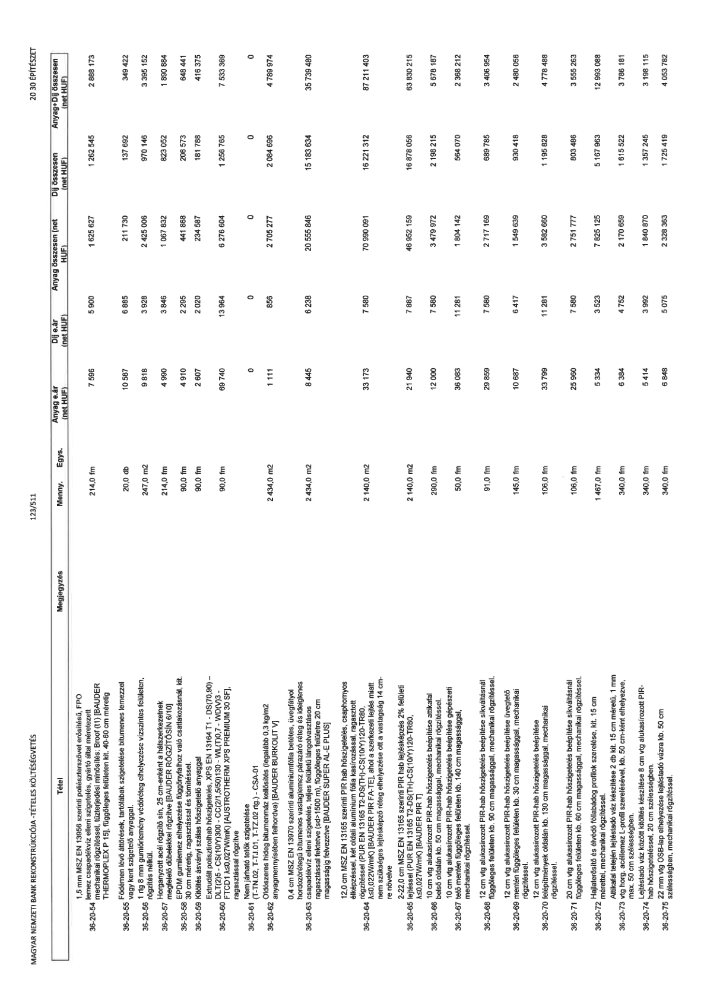

| Tétel | Megjegyzés | Menny. | Egys. | Anyag e.ár (net HUF) | Díj e.ár (net HUF) | Anyag összesen (net HUF) | Díj összesen (net HUF) | Anyag+Díj összesen (net HUF) |
|---|---|---|---|---|---|---|---|---|
| 36-20-54 | 1,5 mm MSZ EN 13956 szerinti poliészterszövet erősítésű, FPO lemez csapadékvíz elleni szigetelés, gyártó által méretezett mechanikai rögzítéssel, tűzterjedési minősítés: Broof (t1) [BAUDER THERMOPLEX P 15], függőleges felületen kit. 40-60 cm méretig | 214,0 | fm | 7 586 | 5 900 | 1 623 627 | 1 262 545 | 2 886 173 |
| 36-20-55 | Födémen lévő áttörések, tartófalak szigetelésbe bitumenes lemezzel vagy kent szigetelő anyaggal. | 20,0 | db | 10 587 | 6 885 | 211 730 | 137 692 | 349 422 |
| 36-20-56 | 1 rtg 8 mm gumiőrlemény védőréteg elhelyezése vízszintes felületen, rögzítés nélkül. | 247,0 | m2 | 9 818 | 3 928 | 2 425 006 | 970 146 | 3 395 152 |
| 36-20-57 | Horganyzott acél rögzítő sín, 25 cm-enként a hátszerekezetnek megfelelő dübelekkel rögzítve [BAUDER RÖGZÍTŐSÍN 6/10] | 214,0 | fm | 4 990 | 3 846 | 1 067 832 | 823 052 | 1 890 884 |
| 36-20-58 | EPDM gumi lemez elhelyezése függönyfalhoz való csatlakozásnál, kit. 30 cm méretig, ragasztással és tömítéssel. | 90,0 | fm | 4 910 | 2 295 | 441 868 | 206 573 | 648 441 |
| 36-20-59 | Kitöltés ásványi szálas hőszigetelő anyaggal | 90,0 | fm | 2 607 | 2 020 | 234 587 | 181 788 | 416 375 |
| 36-20-60 | Extrudált polisztirolhab hőszigetelés, XPS EN 13164 T1 - DS(70,90) - DLT(2)5 - CS(10/Y)300 - CC(2/1,5/50)130 - WL(T)0,7 - WD(V)3 - FTCD1 λ≤0,027W/mK) [AUSTROTHERM XPS PREMIUM 30 SF], ragasztással rögzítve | 90,0 | fm | 69 740 | 13 964 | 6 276 604 | 1 256 765 | 7 533 369 |
| 36-20-61 | Nem járható tetők szigetelése (T-TN.02, T-TJ.01, T-TZ.02 rtg.) - CSA-01 | 0 | NaN | 0 | 0 | 0 | 0 | 0 |
| 36-20-62 | Oldószeres hideg bitumenmáz kellősítés (legalább 0,3 kg/m2 anyagmennyiségben felhordva) [BAUDER BURKOLIT V] | 2434,0 | m2 | 1 111 | 856 | 2 705 277 | 2 084 696 | 4 789 974 |
| 36-20-63 | 0,4 mm MSZ EN 13970 szerinti alumíniumfólia betétes, üvegfátyol hordozórétegű bitumenes párazáró réteg és ideiglenes csapadékvíz elleni szigetelés, teljes felületű lángolvasztásos ragasztással fektetve (sd>1500 m), függőleges felületre 20 cm magasságig felvezetve [BAUDER SUPER AL-E PLUS] | 2434,0 | m2 | 8 445 | 6 238 | 20 555 846 | 15 183 634 | 35 739 480 |
| 36-20-64 | 12,0 cm MSZ EN 13165 szerinti PIR hab hőszigetelés, csaphornyos élképzéssel, két oldali alumínium fólia kasírozással, ragasztott rögzítéssel (PUR EN 13165 T2-DS(TH)-CS(10/Y)120-TR80, λ≤0,022W/mK) [BAUDER PIR FA-TE], ahol a szerkezeti lejtés miatt nem szükséges lejtésképző réteg elhelyezése ott a vastagság 14 cm-re növelve | 2140,0 | m2 | 33 173 | 7 580 | 70 990 091 | 16 221 312 | 87 211 403 |
| 36-20-65 | 2-22,0 cm MSZ EN 13165 szerinti PIR hab lejtésképzés 2% felületi lejtéssel (PUR EN 13165 T2-DS(TH)-CS(10/Y)120-TR80, λ≤0,027W/mK) [BAUDER PIR T] | 2140,0 | m2 | 21 940 | 7 887 | 46 952 159 | 16 878 056 | 63 830 215 |
| 36-20-66 | 10 cm vtg alukasírozott PIR-hab hőszigetelés beépítése attikafal belső oldalán kb. 50 cm magassággal, mechanikai rögzítéssel. | 290,0 | fm | 12 000 | 7 580 | 3 479 972 | 2 198 215 | 5 678 187 |
| 36-20-67 | 10 cm vtg alukasírozott PIR-hab hőszigetelés beépítése gépészeti tető mentén függőleges felületen kb. 140 cm magassággal, mechanikai rögzítéssel. | 50,0 | fm | 36 083 | 11 281 | 1 804 142 | 564 070 | 2 368 212 |
| 36-20-68 | 12 cm vtg alukasírozott PIR-hab hőszigetelés beépítése síkváltásnál függőleges felületen kb. 90 cm magassággal, mechanikai rögzítéssel. | 91,0 | fm | 29 859 | 7 580 | 2 717 169 | 689 785 | 3 406 954 |
| 36-20-69 | 12 cm vtg alukasírozott PIR-hab hőszigetelés beépítése üvegtető mentén függőleges felületen kb. 30 cm magassággal, mechanikai rögzítéssel. | 145,0 | fm | 10 687 | 6 417 | 1 549 639 | 930 418 | 2 480 056 |
| 36-20-70 | 12 cm vtg alukasírozott PIR-hab hőszigetelés beépítése felépítmények oldalán kb. 130 cm magassággal, mechanikai rögzítéssel. | 106,0 | fm | 33 799 | 11 281 | 3 582 660 | 1 195 828 | 4 778 488 |
| 36-20-71 | 20 cm vtg alukasírozott PIR-hab hőszigetelés beépítése síkváltásnál függőleges felületen kb. 60 cm magassággal, mechanikai rögzítéssel. | 106,0 | fm | 25 960 | 7 580 | 2 751 777 | 803 486 | 3 555 263 |
| 36-20-72 | Hajlaterősítő és élvédő fóliabádog profil szerelése, kit. 15 cm mérettel, mechanikai rögzítéssel. | 1467,0 | fm | 5 334 | 3 523 | 7 825 125 | 5 167 963 | 12 993 088 |
| 36-20-73 | Attikafal tetején lejtésadó váz készítése 2 db kit. 15 cm méretű, 1 mm vtg horg. acéllemez L-profil szerelésével, kb. 50 cm-ként elhelyezve, max. 50 cm szélességben. | 340,0 | fm | 6 384 | 4 752 | 2 170 659 | 1 615 522 | 3 786 181 |
| 36-20-74 | Lejtésadó váz között kitöltés készítése 8 cm vtg alukasírozott PIR- hab hőszigeteléssel, 20 cm szélességben. | 340,0 | fm | 5 414 | 3 992 | 1 840 870 | 1 357 245 | 3 198 115 |
| 36-20-75 | 22 mm vtg OSB-lap elhelyezése lejtésadó vázra kb. 50 cm szélességben, mechanikai rögzítéssel. | 340,0 | fm | 6 848 | 5 075 | 2 328 363 | 1 725 419 | 4 053 782 |
